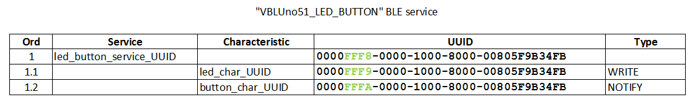
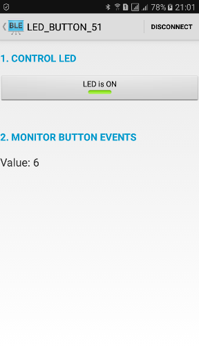

Điều khiển, giám sát thiết bị qua BLE với bo mạch VBLUno51
-
Trong các bài viết trước, chúng tôi đã trình bày một số ứng dụng điển hình của giao tiếp Bluetooth Low Energy (BLE) như: Heart Rate Mesuarement, Health Thermometer, Beacons. Các ứng dụng này sử dụng các services đã được Bluetooth SIG định nghĩa sẵn. Danh sách các services có thể xem tại ĐÂY
-
Dữ liệu truyền qua giao tiếp BLE có thể được tổ chức thành các services, trong services lại bao gồm các characteristics. Khi này hai BLE Node cần kết nối với nhau.
-
Bluetooth SIG định nghĩa sẵn một số services cho các ứng dụng điển hình, nhưng rõ ràng là chúng không đầy đủ, ví dụ như ứng dụng điều khiển một thiết bị bất kỳ. Để phục vụ các ứng dụng như vậy, chúng ta có thể tự định nghĩa các services cho từng trường hợp cụ thể.
-
Các ứng dụng điều khiển thiết bị yêu cầu khả năng ghi dữ liệu từ GATT Client (Smartphones) xuống GATT Server (BLE Device) và ngược lại. Bài viết này chúng tôi minh họa việc thiết kế và cài đặt một services đơn giản cho BLE, ứng dụng điều khiển LED và nhận tín hiệu trạng thái BUTTON, gọi tắt là VBLUno51_LED_BUTTON Service.
-
VBLUno51_LED_BUTTON Service
Cấu trúc của VBLUno51-LED BUTTON Service

-
Service này bao gồm hai characteristic cho hai mục đích khác nhau:
-
LED Characteristic: Giúp Master truyền tín hiệu điều khiển xuống thiết bị, với kiểu WRITE. Tương tự, các bạn cũng có thể chuyển thành tín hiệu điều khiển bất kỳ, không chỉ để bật tắt LED.
-
BUTTON Characteristic: Với kiểu NOTIFY, characteristic này cho phép thiết bị BLE có thể gửi giá trị cập nhật đến Master. Ta có thể sử dụng characteristic này để gửi giá trị trạng thái nút bấm, giá trị cảm biến lên Smartphones để xử lý. Với characteristic kiểu Notify, tối thiểu chúng ta cần một Descriptor đi kèm, đó là Client Characteristic Configuration Desp. Descriptor này nằm ở phía Master giúp cho phép nhận hoặc không nhận giá trị Notify gửi lên từ BLE Device.
-
-
Như vậy, với Services được thiết kế riêng này, chúng ta có thể cài đặt tính năng điều khiển/giám sát thiết bị bất kỳ từ các điện thoại thông minh (hoặc Tablet/PC) qua giao tiếp BLE. Phần tiếp theo trình bày việc cài đặt service này trên Arduino IDE sử dụng kit VBLUno51 của VNG IoTLab và viết phần mềm chạy trên Android.
Firmware cho mạch VBLUno51
-
Bài toán minh họa:
-
Bo mạch VBLUno51 kết nối với Smartphone thông qua giao tiếp BLE;
-
Chức năng:
-
Smartphone –> VBLUno51:
Điều khiển bật tắt LEDbằng Smartphones; -
VBLUno51 –> Smartphone:
Mỗi lần nhấn nút bấmtrên bo mạch VBLUno51 sẽ truyền một biến giá trị (tăng từ 0x00 đến 0xFF) lên mobile.
-
-
-
Thực hiện:
-
Tải mã nguồn chương trình viết trên Arduino IDE cho VBLUno51 tại ĐÂY . Xem thư mục
firmware_vbluno51 -
Upload code xuống bo mạch VBLUno51
-
-
Một số điểm chú ý trong code:
Xử lý sự kiện khi nhận được dữ liệu truyền từ Mobile đến. Tùy giá trị nhận được mà bật hoặc tắt LED.
void gattserverWriteCallback(const GattWriteCallbackParams *Handler) {
static uint8_t buf[TXRX_BUF_LEN];
static uint16_t bytes_read=0;
if(Handler->handle == led_characteristic.getValueAttribute().getHandle()) {
// Read the value of characteristic
ble.readCharacteristicValue(led_characteristic.getValueAttribute().getHandle(),
buf,
&bytes_read);
if (bytes_read > 0) {
//on LED
if (buf[0] == 0) {
digitalWrite(LED, HIGH);
Serial.println("Turn LED on");
}
//off LED
else {
digitalWrite(LED, LOW);
Serial.println("Turn LED off");
}
}//if2
}//if
}
Mỗi khi nhấn Button trên VBLUno51, thực hiện tăng biến lên một giá trị và gửi lên Mobile.
//ISR for Button interrupt
void buttonIsr() {
button_char_value[0]++;
//push data to Mobile
ble.updateCharacteristicValue(button_characteristic.getValueAttribute().getHandle(),
(const uint8_t*)button_char_value,
1);
Serial.print("Send data to Mobile via BLE: ");
Serial.println(button_char_value[0]);
}
- Thử dùng phần mềm BLE Scanner để discovery kết nối BLE từ VBLUno51.

Viết phần mềm điều khiển trên Android OS
-
Tải mã nguồn chương trình viết ứng dụng trên Android tại ĐÂY. Xem thư mục
android -
Một số điểm chú ý trong code:
LedButtonGattAttributes class: Khai báo các thông tin về VBLUno51_LED_BUTTON services. Đây là dịch vụ mà phần mềm này mong muốn kết nối.
public class LedButtonGattAttributes {
/**
* brief UUID cho các services và characteristic
*/
//Bot service gồm 5 characteristics
public static final String led_button_service_uuid = "0000FFF8-0000-1000-8000-00805F9B34FB";
public static final String led_char_uuid = "0000FFF9-0000-1000-8000-00805F9B34FB"; //WRITE-uchar
public static final String button_char_uuid = "0000FFFA-0000-1000-8000-00805F9B34FB"; //NOTIFY-uchar
public static final int LED_ON = 0;
public static final int LED_OFF = 1;
private static HashMap<String, String> attributes = new HashMap();
public static String CLIENT_CHARACTERISTIC_CONFIG = "00002902-0000-1000-8000-00805f9b34fb";
static {
attributes.put(led_button_service_uuid, "LED_BUTTON_SERVICE");
attributes.put(led_char_uuid, "LED");
attributes.put(button_char_uuid, "BUTTON");
}
public static String lookup(String uuid, String defaultName) {
String name = attributes.get(uuid);
return name == null ? defaultName : name;
}
}
BluetoothLeService class: Chú ý đến thủ tục ghi Dữ liệu xuống Device (VBLUno51) và Cho phép device Notify dữ liệu lên mobile
/*
* @brief: Hàm ghi giá trị xuống 1 custom characteristic
*/
public void writeCustomCharacteristic(String serviceUUID,
String charUUID,
int value) {
if (mBluetoothAdapter == null || mBluetoothGatt == null) {
Log.w(TAG, "BluetoothAdapter not initialized");
return;
}
/*check if the service is available on the device*/
BluetoothGattService mCustomService = mBluetoothGatt.getService(UUID.fromString(serviceUUID));
if(mCustomService == null){
Log.w(TAG, "Custom BLE Service not found");
return;
}
/*get the read characteristic from the service*/
BluetoothGattCharacteristic mWriteCharacteristic = mCustomService.getCharacteristic(UUID.fromString(charUUID));
mWriteCharacteristic.setValue(value,android.bluetooth.BluetoothGattCharacteristic.FORMAT_UINT8,0);
if(mBluetoothGatt.writeCharacteristic(mWriteCharacteristic) == false){
Log.w(TAG, "Failed to write characteristic");
}
}
/*
* @brief: Hàm cho phép notify theo thông tin UUID của service, characteristic
*/
public void notifyCustomCharacteristic(String serviceUUID,
String charUUID,
boolean state) {
if (mBluetoothAdapter == null || mBluetoothGatt == null) {
Log.w(TAG, "BluetoothAdapter not initialized");
return;
}
/*check if the service is available on the device*/
BluetoothGattService mCustomService = mBluetoothGatt.getService(UUID.fromString(serviceUUID));
if(mCustomService == null){
Log.w(TAG, "Custom BLE Service not found");
return;
}
BluetoothGattCharacteristic mCharacteristic = mCustomService.getCharacteristic(UUID.fromString(charUUID));
setCharacteristicNotification(mCharacteristic, state);
}
DeviceControlActivity class: Tương tác với control trên forrm
/*
* @brief Hành động khi nhấn nút LED
*/
public void onClickLed(View v){
if(mBluetoothLeService != null) {
int value = LedButtonGattAttributes.LED_OFF;
if (tgbLed.isChecked()) {
value = LedButtonGattAttributes.LED_ON;
}
else {
value = LedButtonGattAttributes.LED_OFF;
}
mBluetoothLeService.writeCustomCharacteristic(
LedButtonGattAttributes.led_button_service_uuid,
LedButtonGattAttributes.led_char_uuid,
value);
Log.v(TAG, tgbLed.getText().toString());
}
}
/*
* @brief Thủ tục xử lý dữ liệu nhận được từ BLE Device (VBLUno51)
*/
public void processBleData(String data){
lblButtonValue.setText("Value: " + data);
}
Kết quả demo
- Cấp nguồn để mạch VBLUno51 làm việc. Sau đó chạy phần mềm Android đã viết. Thực hiện quét các thiết bị BLE sẽ tìm thấy VBLUno51 với tên
LED_BUTTON_51

- Sau khi đã Connect, thử nhấn Toggle Button trên form để bật tắt LED. Nhấn nút bấm trên VBLUno51 để xem kết quả hiển thị trên phần mềm Android.

Với cách làm tương tự, các bạn có thể tạo ra nhiều BLE Services phù hợp cho ứng dụng của mình.
Các bạn có thể theo dõi Trang facebook của VBLUno51 để có thể xem các video hướng dẫn mới nhé
Fan page